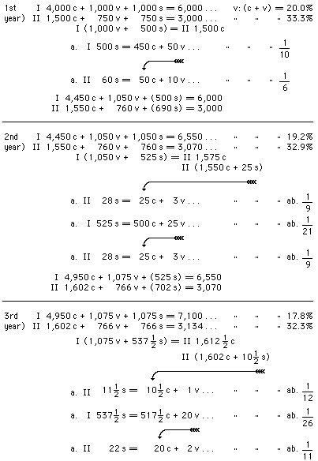
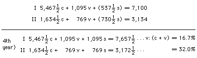
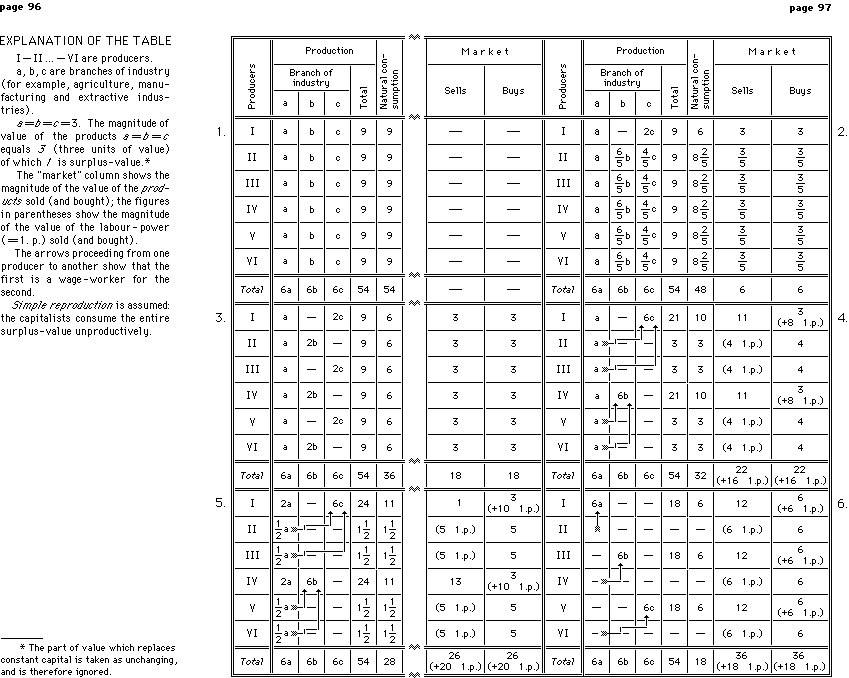

|
Written in the autumn of 1893 |
Published according |
From V. I. Lenin, Collected Works, 4th English Edition,
Progress Publishers, Moscow, 1972,
First printing 1960
Second printing 1963
Third printing 1972
|
ON THE SO-CALLED MARKET QUESTION[17] . . . . .
. . . |
75 |
|
I . . . . . . . . .
. . . . . . . . . .
. . |
79 |
page 79
Can capitalism develop in Russia and reach full development when the masses of the people are poor and are becoming still poorer? The development of capitalism certainly needs an extensive home market; but the ruin of the peasantry undermines this market, threatens to close it altogether and make the organisation of the capitalist order impossible. True, it is said that, by transforming the natural economy of our direct producers into a commodity economy, capitalism is creating a market for itself; but is it conceivable that the miserable remnants of the natural economy of indigent peasants can form the basis for the development in our country of the mighty capitalist production that we see in the West? Is it not evident that the one fact of the masses being impoverished already makes our capitalism something impotent and without foundation, incapable of embracing the entire production of the country and of becoming the basis of our social economy?
Such are the questions that are constantly being advanced in our literature in opposition to the Russian Marxists; the absence of a market is one of the principal arguments invoked against the possibility of applying the theory of Marx to Russia. To refute this argument is the aim, incidentally, of the paper The Market Question, which we are about to discuss.
The main premise of the author of the paper is the assumption of the "general and exclusive domination of capitalist production." Proceeding from that premise he expounds
page 80
the contents of Chapter XXI of Volume II of Capital (Part III -- "The Reproduction and Circulation of the Aggregate Social Capital").
Here Marx sets out to investigate how social production replaces the part of the product which serves to satisfy the personal needs of the workers and the capitalists, and that which goes to form the elements of productive capital. Hence, in Volume I, the investigation of the production and reproduction of an individual capital could be limited to an analysis of the component parts of capital and the product according to their value -- [as is shown in Volume I of Capital the value of the product consists of c (constant capital) + v (variable capital) + s (surplus-value)] -- but here the product must be divided into its material components, because that part of the product which consists of the elements of capital cannot be used for personal consumption, and vice versa. In view of that, Marx divides aggregate social production -- and consequently, the aggregate social product -- into two departments: I) the production of means of production, i.e., the elements of productive capital -- commodities which can serve only for productive consumption, and II) the production of means of consumption, i.e., commodities that serve for the personal consumption of the working class and the capitalist class.
The investigation is based on the following scheme [Arabic numerals indicate units of value -- millions of rubles, for example; Roman numerals indicate the above-mentioned departments of social production. The rate of surplus-value is taken at 100 per cent]:
I 4,000c + 1,000v + 1,000s = 6,000 /Capital = 7,500 \ II 2,000c + 500v + 500s = 3,000 \Product = 9,000/
Let us begin by supposing that we are dealing with simple reproduction, i.e., let us assume that production does not expand, but remains permanently on its former scale; this means that the capitalists consume the whole surplus-value unproductively, that they expend it for their personal needs and not for accumulation. Under those circumstances it is obvious, firstly, that II 500v and II 500s must be consumed by the capitalists and the workers in
page 81
the same department II, since that product exists in the form of means of consumption intended for the satisfaction of personal needs. Further, I 4,000c in its natural form must be consumed by the capitalists in the same department I, because the condition that the scale of production remains unchanged demands the retention of the same capital for the next year's production of means of production; consequently, the replacement of this part of capital also presents no difficulty; the corresponding part of the product existing in the natural form of coal, iron, machines, etc., will be exchanged among the capitalists engaged in producing means of production and will serve them, as before, as constant capital. Thus, there remains I(v + s) and IIc. I 1,000v + I 1,000s are products existing in the form of means of production, and II 2,000c -- in the form of means of consumption. The workers and capitalists in department I (under simple reproduction, i.e., consumption of the entire surplus-value) must consume means of consumption to the value of 2,000 [1,000(v) + 1,000(s)]. To be able to continue production on the previous scale, the capitalists in department II must acquire means of production to the extent of 2,000 in order to replace their constant capital (2,000 IIc). It is evident from this that Iv + Is must be exchanged for IIc, because, if they are not, production on the previous scale will be impossible. The condition for simple reproduction is that the sum of the variable capital and surplus value in department I must be equal to the constant capital in department II: I(v + s) = IIc. In other words, that law may be formulated as follows: the sum of all the new values produced in the course of a year (in both departments) must be equal to the gross value of the product existing in the form of means of consumption: I(v + s) + II(v + s) = II(c + v + s).
Actually, of course, there can be no simple reproduction, both because the production of the whole of society cannot remain on the previous scale every year, and because accumulation is a law of the capitalist system. Let us, therefore, examine how social production on an expanding scale, or accumulation, takes place. Where there is accumulation, only part of the surplus-value is consumed by the capitalists for their personal needs, the other part being
page 82
consumed productively, i.e., converted into the elements of productive capital for the expansion of production. Therefore, where there is accumulation, I(v + s) and IIc cannot be equal: I(v + s) must be greater than IIc in order that part of the surplus-value in department I (Is) may be used for the expansion of production, and not exchanged for means of consumption. Thus we get
A. Scheme of Simple Reproduction : I 4,000c + 1,000v + 1,000s = 6,000 II 2,000c + 500v + 500s = 3,000
I(v+s) = IIc. I 4,000c + 1,000v + 1,000s = 6,000 II 1,500c + 750v + 750s = 3,000
I(v+s) > IIc.
Let us now see how social production must proceed if there is accumulation.
First year.
I 4,000c + 1,000v + 1,000s = 6,000 /Capital = 7,250 \ II 1,500c + 750v + 750s = 3,000 \Product = 9,000/
I (1,000v + 500s) are exchanged for II 1,500c (as in simple reproduction). I 500s are accumulated, i.e., go to expand production, are converted into capital. If we take the previous division into constant and variable capital we get
The additional constant capital (400c) is contained in the product I (its natural form is means of production); but the additional variable capital (100v) must be obtained from the capitalists of department II, who, consequently, also have to accumulate: they exchange part of their surplus-value (II 100s) for means of production (I 100v) and convert these means of production into additional constant capital. Consequently, their constant capital grows from 1,500c to 1,600c; to process it additional labour-power
page 83
is needed -- 50v, which is also taken out of the surplus value of the capitalists of department II.
By adding the additional capital from department I and department II to the original capital we get the following distribution of the product:
I 4,400c + 1,100v + (500)s = 6,000 II 1,600c + 800v + (600)s = 3,000
The surplus-value in parentheses represents the capitalists' consumption fund, i.e., the part of surplus-value that does not go for accumulation, but for the personal needs of the capitalists.
If production proceeds on the previous scale, at the end of the year we shall get:
I 4,400c + 1,100v + 1,100s = 6,600 /Capital = 7,900 \ II 1,600c + 800v + 800s = 3,200 \Product = 9,800/
I (1,100v + 550s) are exchanged for II 1,650c; the additional 50c are taken from 800 IIs [and the increase of c by 50 causes an increase of v by 25].
Further, 550 I s are accumulated as before:
550 Is = 440c + 110v
165 IIs = 110c + 55v
If to the original capital we now add the additional [to I 4,400c -- 440c; to I 1,100v -- 110v; to II 1,600c -- 50c and 110c; and to II 800v -- 25v -- and 55v], we shall get:
I 4,840c + 1,210v + (550 s) = 6,600 II 1,760c + 880v + (560 s) = 3,200
With the further progress of production we get
I 4,840c + 1,100v + 1,210s = 7,260 /Capital = 8,690 \ II 1,760c + 880v + 880s = 3,520 \Product = 10,780/
Such, in essence, are the results of Marx's investigations in the reproduction of the aggregate social capital. These investigations (the reservation must be made) are given here in a most concise form; very much that Marx analyses in detail has been omitted -- for
page 84
example, circulation of money, replacement of fixed capital which is gradually worn out, and so forth -- because all this has no direct bearing on the question under review.
What conclusions does the author of the paper draw from these investigations made by Marx? Unfortunately, he does not formulate his conclusions very precisely and definitely, so that we have to make our own judgement of them from certain remarks which do not fully harmonise with each other. Thus, for example, we read:
"We have seen here," says the author, "how accumulation takes place in department I, the production of means of production as means of production: . . . this accumulation takes place independently both of the progress of the production of articles of consumption and of the personal consumption itself, no matter whose it is" (page 15/3).
Of course, it is wrong to speak of accumulation being "independent" of the production of articles of consumption, if only because the expansion of production calls for new variable capital and, consequently, articles of consumption; evidently, by using that term the author merely wanted to stress the specific feature of the scheme, namely, that the reproduction of Ic -- constant capital in department I -- takes place without exchanges with department II, i.e., every year a certain quantity of, say, coal is produced in society for the purpose of producing coal. It goes without saying that this production (of coal for the purpose of producing coal) links up, by a series of subsequent exchanges, with the production of articles of consumption -- otherwise, neither the coal-owners nor their workers could exist.
Elsewhere, the author expresses himself much more feebly: "The principal movement of capitalist accumulation," he says, "takes place, and has taken place (except in very early periods) independently of any direct producers, independently of the personal consumption of any stratum of the population" (p. 8). Here, reference is made only to the predominance of the production of means of production over the production of articles of consumption in
page 85
the course of the historical development of capitalism. This reference is repeated in another passage: "On the one hand, the typical feature of capitalist society is accumulation for accumulation, productive but not personal consumption; on the other hand, typical of it is precisely the production of means of production as means of production" (p. 21/2). If by these references the author wanted to say that capitalist society is distinguished from the other economic organisations which preceded it precisely by the development of machines and the articles necessary for them (coal, iron, and so forth), then he is quite right. In technical level capitalist society is higher than all others, and technical progress is expressed precisely in the fact that the work of machines pushes human labour more and more into the background.
Instead of engaging in criticism of the author's insufficiently clear statements it will, therefore, be better to turn straight to Marx and see whether it is possible to draw from his theory the conclusion that department I "predominates" over department II, and in what sense this predominance is to be understood.
From Marx's scheme quoted above the conclusion cannot be drawn that department I predominates over department II: both develop on parallel lines. But that scheme does not take technical progress into consideration. As Marx proved in Volume I of Capital, technical progress is expressed by the gradual decrease of the ratio of variable capital to constant capital (v/c), whereas in the scheme it is taken as unchanged.
It goes without saying that if this change is made in the scheme there will be a relatively more rapid increase in means of production than in articles of consumption. Nevertheless, it seems to me that it will be worth while making that calculation, firstly, for the sake of clarity, and secondly, to avoid possible wrong conclusions from that premise.
[In the following scheme the rate of accumulation is taken as constant: half of the surplus-value is accumulated and half is consumed personally.]
[The reader may skip the following scheme and pass straight to the conclusions on the next page. The letter a stands for additional capital used for the expansion of production, i.e., the accumulated part of surplus-value.]


Let us now compare the conclusions drawn from this scheme concerning the growth of the various parts of the social product:[19]
Means of pro-
Means of pro-
Means of
Aggregate
Pro- %
Con- % % %
1st year
4,000
100
2,000
100
3,000
100
9,000
100
We thus see that growth in the production of means of production as means of production is the most rapid, then comes the production of means of production as means of consumption, and the slowest rate of growth b in the production of means of consumption. That conclusion could have been arrived at, without Marx's investigation in Volume II of Capital, on the basis of the law that constant capital tends to grow faster than variable: the proposition that means of production grow faster is merely a paraphrase of this law as applied to social production as a whole.
But perhaps we should take another step forward? Since we have accepted that the ratio v to c + v diminishes constantly, why not let v decrease to zero, the same number of workers being sufficient for a larger quantity of means of
page 88
production? In that case, the accumulated part of surplus-value will be added straight to constant capital in department I, and social production will grow exclusively on account of means of production as means of production, complete stagnation reigning in department[*] II**
That would, of course, be a misuse of the schemes, for such a conclusion is based on improbable assumptions and is therefore wrong. Is it conceivable that technical progress, which reduces the proportion of v to c, will find expression only in department I and leave department II in a state of complete stagnation? Is it in conformity with the laws governing capitalist society, laws which demand of every capitalist that he enlarge his enterprise on pain of ruin, that no accumulation at all should take place in department II?
Thus, the only correct conclusion that can be drawn from Marx's investigation, outlined above, is that in capitalist society, the production of means of production increases faster than the production of means of consumption. As has been stated already, this conclusion follows directly from the generally known proposition that capitalist production attains an immeasurably higher technical level than production in previous times.*** On this point specifically Marx expresses himself quite definitely only in one
I 4,000c + 1,000v + 1,000s = 6,000
I (1,000v + 500s) = II 1,500c
I 4,500c + 1,000v + (500s) = 6,000
I 4,500c + 1,000v + 1,000s = 6,500
I (1,000v + 500s) = II 1,500c
passage, and that passage fully confirms the correctness of the formula given:
"What distinguishes capitalist society in this case from the savage is not, as Senior thinks, the privilege and peculiarity of the savage to expend his labour at times in a way that does not procure him any products resolvable (exchangeable) into revenue, i.e., into articles of consumption. No, the distinction consists in the following:
"a) Capitalist society employs more [Nota bene] of its available annual labour in the production of means of production (ergo, of constant capital), which are not resolvable into revenue in the form of wages or surplus-value, but can function only as capital." (Das Kapital, Bd. II, Seite 436.)[20]
The question now is, what relation has the theory that has been expounded to "the notorious market question"? The theory is based on the assumption of the "general and exclusive domination of the capitalist mode of production," whereas the "question" is one of whether the full development of capitalism is "possible" in Russia? True, the theory introduces a correction into the ordinary conception of the development of capitalism, but, evidently, the explanation of how capitalism develops in general does not in the least help to clear up the question of the "possibility" (and necessity) of the development of capitalism in Russia.
The author of the paper, however, does not confine himself to expounding Marx's theory of the process of aggregate social production organised on capitalist lines. He points to the necessity of distinguishing "two essentially different features in the accumulation of capital: 1) the development of capitalist production in breadth, when it takes hold of already existing fields of labour, ousting natural economy and expanding at the latter's expense; and 2) the development of capitalist production in depth, if one may so express it, when it expands independently of natural economy, i.e., under the general and exclusive domination of the capitalist mode of production." Without, for the time being, stopping to criticise this division, let us proceed directly to find out what the author means by the development
of capitalism in breadth: the explanation of that process, which consists in the replacement of natural economy by capitalist economy, should show us how Russian capitalism will "take hold of the whole country."
The author illustrates the development of capitalism in breadth by the following diagram:[*]
A -- capitalists; W -- direct producers
The essential difference between the spheres A and W," says the author, "is that in A the producers are capitalists who consume their surplus-value productively, whereas in W they are direct producers, who consume their surplus-value (here I mean the value of the product over and above the value of the means of production and necessary means of subsistence) unproductively.
"If we follow the arrows in the diagram we shall easily see how capitalist production in A develops at the expense of consumption in W, gradually absorbing it." The product of the capitalist enterprise a goes "to the direct producers" in
the form of articles of consumption; in exchange for it the "direct producers" return the constant capital (c) in the form of means of production and the variable capital (v) in the form of means of consumption, and the surplus-value (s) in the form of the elements of additional productive capital: c1+ v1. That capital serves as the basis of the new capitalist enterprise a1, which in exactly the same way sends its product in the form of articles of consumption to the "direct producers," and so on. "From the above diagram of the development of capitalism in breadth it follows that the whole of production is most closely dependent upon consumption in 'foreign' markets, upon consumption by the masses (and from the general point of view it makes absolutely no difference where those masses are -- alongside the capitalists, or somewhere across the ocean). Obviously, the expansion of production in A, i.e., the development of capitalism in this direction, will come to a stop as soon as all the direct producers in W turn into commodity producers, for, as we saw above, every new enterprise (or expansion of an old one) is calculated to supply a new circle of consumers in W." In conclusion the author says: "The current conception of capitalist accumulation, i.e., of capitalist reproduction on an expanded scale, is limited solely to this view of things, and has no suspicion of the development of capitalist production in depth, independently or any countries with direct producers, i,e., independently of so-called foreign markets."
The only thing we can agree with in this entire exposition is that this conception of the development of capitalism in breadth, and the diagram which illustrates it, is in complete accordance with the current, Narodnik views on the subject.
It would, indeed, be difficult to depict the utter absurdity and vapidity of current views more saliently and strikingly than is done in the diagram given.
"The current conception" always regarded capitalism in our country as something isolated from the "people's system," standing apart from it, exactly as it is depicted in the diagram from which it is quite impossible to see what connection there is between the two "spheres," the capitalist sphere and the people's sphere. Why do commodities sent from A find a market in W ? What causes the transformation
of natural economy in W into commodity economy? The current view has never answered these questions because it regards exchange as something accidental and not as a certain system of economy.
Further, the current view has never explained whence and how capitalism arose in our country any more than it is explained by the diagram: the matter is presented as though the capitalists have come from somewhere outside and not from among these very "direct producers." Where the capitalists get the "free workers" who are needed for enterprises a, a 1, etc., remains a mystery. Everybody knows that in reality those workers are obtained precisely from the "direct producers," but the diagram does not show at all that when commodity production embraced "sphere" W, it created there a body of free workers.
In short, the diagram -- exactly like the current view -- explains absolutely nothing about the phenomena of the capitalist system in our country and is therefore worthless. The object for which it was drawn -- to explain how capitalism develops at the expense of natural economy, and embraces the whole country -- is not achieved at all, because, as the author himself sees -- "if we adhere consistently to the view under examination, then we must conclude that it is not possible for the development of the capitalist mode of production to become universal."
After this, one can only express surprise at the fact that the author himself adheres, if only in part, to that view when he says that "capitalism did indeed (?), in its infancy, develop in this very easy (sic!?) way (very easy because here existing branches of labour are involved) and is partly developing in the same direction even now (??), since there are still remnants of natural economy in the world, and since the population is growing."
Actually, this is not a "very easy" way of developing capitalism, but simply a "very easy" way of understanding the process; so "very easy" that it would be more correct to call it a total lack of understanding. The Russian Narodniks of all shades make shift to this very day with these "very easy" tricks: they never dream of explaining how capitalism arose in our country, and how it functions, but confine themselves to comparing the "sore spot" in our system, capi-
talism, with the "healthy spot," the direct producers, the "people"; the former is put on the left, the latter on the right, and all this profound thinking is rounded off with sentimental phrases about what is "harmful" and what is "useful" for "human society."
To correct the diagram given above we must begin by ascertaining the content of the concepts dealt with. By commodity production is meant an organisation of social economy in which goods are produced by separate, isolated producers, each specialising in the making of some one product, so that to satisfy the needs of society it is necessary to buy and sell products (which, therefore, become commodities) in the market. By capitalism is meant that stage of the development of commodity production at which not only the products of human labour, but human labour-power itself becomes a commodity. Thus, in the historical development of capitalism two features are important: 1) the transformation of the natural economy of the direct producers into commodity economy, and 2) the transformation of commodity economy into capitalist economy. The first transformation is due to the appearance of the social division of labour -- the specialisation of isolated [N. B.: this is an essential condition of commodity economy], separate producers in only one branch of industry. The second transformation is due to the fact that separate producers, each producing commodities on his own for the market, enter into competition with one another: each strives to sell at the highest price and to buy at the lowest, a necessary result of which is that the strong become stronger and the weak go under, a minority are enriched and the masses are ruined. This leads to the conversion of independent producers into wage-workers and of numerous small enterprises into a few big ones. The diagram should, therefore, be drawn up to show both these features of the development of capitalism and the changes which this development brings about in the dimensions of the market, i.e., in the quantity of products that are turned into commodities.
The following table[*] has been drawn up on these lines: all extraneous circumstances have been abstracted, i.e., taken as constants (for example, size of population, productivity of labour, and much else) in order to analyse the influence on the market of only those features of the development of capitalism that are mentioned above.
Let us now examine this table showing the consecutive changes in the system of economy of a community consisting of 6 producers. It shows 6 periods expressing stages in the transformation of natural into capitalist economy.
1st period. We have 6 producers, each of whom expends his labour in all 3 branches of industry (in a, in b and in c ). The product obtained (9 from each producer: a + b + c = 9) is spent by each producer on himself in his own household. Hence, we have natural economy in its pure form; no products whatever appear in the market.
2nd period. Producer I changes the productivity of his labour: he leaves industry b and spends the time formerly spent in that industry in industry c. As a result of this specialisation by one producer, the others cut down production c, because producer I has produced more than he consumes himself, and increase production b in order to turn out a product for producer I. The division of labour which comes into being inevitably leads to commodity production: producer I sells 1c and buys 1 b ; the other producers sell 1b (each of the 5 sells 1/5b ) and buy 1c (each buying 6c ); a quantity of products appears in the market to the value of 6. The dimensions of the market correspond exactly to the degree of specialisation of social labour: specialisation has taken place in the production of one c (1c = 3) and of one b (1b = 3), i.e., a ninth part of total social production [18c ( = a = b)], and a ninth part of the total social product has appeared in the market.
3rd period. Division of labour proceeds further, embracing branches of industry b and c to the full: three producers engage exclusively in industry b and three exclusively in industry c. Each sells 1c (or 1b ), i.e., 3 units of value, and also buys 3 -- 1b (or 1c ). This increased division of labour leads to an expansion of the market, in which 18 units of
value now appear. Again, the dimensions of the market correspond exactly to the degree of specialisation (= division) of social labour: specialisation has taken place in the production of 3b and 3c, i.e., one-third of social production, and one-third of the social product appears in the market.
The 4th period already represents capitalist production: the process of the transformation of commodity into capitalist production did not go into the table and, therefore, must be described separately.
In the preceding period each producer was already a commodity producer (in the spheres of industry b and c, the only ones we are discussing): each producer separately, on his own, independently of the others, produced for the market, whose dimensions were, of course, not known to any one of them. This relation between isolated producers working for a common market is called competition. It goes without saying that an equilibrium between production and consumption (supply and demand) is, under these circumstances, achieved only by a series of fluctuations. The more skilful, enterprising and strong producer will become still stronger as a result of these fluctuations, and the weak and unskilful one will be crushed by them. The enrichment of a few individuals and the impoverishment of the masses -- such are the inevitable consequences of the law of competition. The matter ends by the ruined producers losing economic independence and engaging themselves as wage-workers in the enlarged establishment of their fortunate rival. That is the situation depicted in the table. Branches of industry b and c, which were formerly divided among all 6 producers, are now concentrated in the hands of 2 producers (I and IV). The rest of the producers are their wage-workers, who no longer receive the whole product of their labour, but the product with the surplus-value deducted, the latter being appropriated by the employer [let me remind you that, by assumption, surplus value equals one-third of the product, so that the producer of 2b (= 6) will receive from the employer two-thirds -- i.e., 4]. As a result, we get an increase in division of labour -- and a growth of the market, where 22 units now appear, notwithstanding the fact that the "masses" are "impoverished": the producers who have become (partly)
wage-workers no longer receive the whole product of 9, but only of 7 -- they receive 3 from their independent activity (agricultural -- industry a ) and 4 from wage-labour (from the production of 2b or 2c ). These producers, now more wage-workers than independent masters, have lost the opportunity of bringing any product of their labour to the market because ruin has deprived them of the means of production necessary for the making of products. They have had to resort to "outside employments," i.e., to take their labour-power to the market and with the money obtained from the sale of this new commodity to buy the product they need.
The table shows that producers II and III, V and VI each sells labour-power to the extent of 4 units of value and buys articles of consumption to the same amount. As regards the capitalist producers, I and IV, each of them produces products to the extent of 21; of this, he himself consumes 10 [3 (= a) + 3 (= c or b) + 4 (surplus-value from 2c or 2b )] and sells 11; but he buys commodities to the extent of 3 (c or 2b ) + 8 (labour-power).
In this case, it must be observed, we do not get complete correspondence between the degree of specialisation of social labour (the production of 5b and 5c, i.e., to the sum of 30, was specialised) and the dimensions of the market (22), but this error in the table is due to our having taken simple reproduction,* i.e., with no accumulation; that is why the surplus-value taken from the workers (four units by each capitalist) is all consumed in kind. Since absence of accumulation is impossible in capitalist society, the appropriate correction will be made later.
5th period. The differentiation of the commodity producers has spread to the agricultural industry (a ): the wage-workers could not continue their farming, for they worked mainly in the industrial establishments of others, and were ruined: they retained only miserable remnants of their farming, about a half (which, we assumed, was just enough to cover the needs of their families) -- exactly as the present cultivated land of the vast mass of our peasant "agriculturists" are merely miserable bits of independent farming. The concentration of industry a in an insignificant
number of big establishments has begun in an exactly similar way. Since the grain grown by the wage-workers is now not enough to cover their needs, wages, which were kept low by their independent farming, increase and provide the workers with the money to buy grain (although in a smaller quantity than they consumed when they were their own masters): now the worker produces 1 1/2 (= 1/2 a) and buys 1, getting in all 2 1/2 instead of the former 3 (= a). The capitalist masters, having added expanded farming to their industrial establishments now each produce 2a (= 6), of which 2 goes to the workers in the form of wages and 1 (1/3 a) -- surplus-value -- to themselves. The development of capitalism depicted in this table is accompanied by the "impoverishment" of the "people" (the workers now consume only 6 -- each instead of 7, as in the 4th period), and by the growth of the market, in which 26 now appear. The "decline of farming," in the case of the majority of the producers, did not cause a shrinkage, but an expansion of the market for farm produce.
6th period. The specialisation of occupations, i.e., the division of social labour, is completed. All branches of industry have separated, and have become the speciality of separate producers. The wage-workers have completely lost their independent farms and subsist entirely on wage labour. We get the same result: the development of capitalism [independent farming on one's own account has been fully eliminated], "impoverishment of the masses" [although the workers' wages have risen, their consumption has diminished from 6 1/2 to 6: they each produce 9 (3a, 3b, 3c) and give their masters one-third as surplus-value], and a further growth of the market, in which there now appears two-thirds of the social product (36).
Let us now draw the conclusions which follow from the above table.
The first conclusion is that the concept "market" is quite inseparable from the concept of the social division
of labour -- that "general basis of all commodity [and consequently, let us add, of capitalist] production" as Marx calls it. The "market" arises where, and to the extent that, social division of labour and commodity production appear. The dimensions of the market are inseparably connected with the degree of specialisation of social labour.
". . . It [a commodity] cannot acquire the properties of a socially recognised universal equivalent, except by being converted into money. That money, however, is in someone else's pocket. In order to entice the money out of that pocket, our friend's commodity must, above all things, be a use-value to the owner of the money. For this, it is necessary that the labour expended upon it be of a kind that is socially useful, of a kind that constitutes a branch of the social division of labour. But division of labour is a system of production which has grown up spontaneously and continues to grow behind the backs of the producers. The commodity to be exchanged may possibly be the product of some new kind of labour that pretends to satisfy newly arisen requirements, or even to give rise itself to new requirements. A particular operation, though yesterday, perhaps, forming one out of the many operations conducted by one producer in creating a given commodity, may today separate itself from this connection, may establish itself as an independent branch of labour and send its incomplete product to market as an independent commodity " (Das Kapital, Bd. I, S. 85.[21] My italics).
Thus, the limits of the development of the market, in capitalist society, are set by the limits of the specialisation of social labour. But this specialisation, by its very nature is as infinite as technical developments. To increase the productivity of human labour in, for instance, the making of some part of a whole product, the production of that part must be specialised, must become a special one concerned with mass production and, therefore, permitting (and engendering) the employment of machines, etc. That is on the one hand. On the other hand, technical progress in capitalist society consists in the socialisation of labour, and this socialisation necessarily calls for specialisation in the various functions of the production process, for their transformation from scattered, isolated functions repeated separately in
every establishment engaged in this production, into socialised functions concentrated in one, new establishment and calculated to satisfy the requirements of the whole of society. I shall quote an example:
"Recently, in the United States, the woodworking factories are becoming more and more specialised, 'new factories are springing up exclusively for the making of, for instance, axe handles, broom handles, or extensible tables. . . . Machine building is making constant progress, new machines are being continuously invented to simplify and cheapen some side of production. . . . Every branch of furniture making, for instance, has become a trade requiring special machines and special workers. . . . In carriage building, wheel rims are made in special factories (Missouri, Arkansas Tennessee), wheel spokes are made in Indiana and Ohio and hubs again are made in special factories in Kentucky and Illinois. All these separate parts are bought by factories which specialise in the making of whole wheels. Thus quite a dozen factories take part in the building of some cheap kind of vehicle'" (Mr. Tverskoi, "Ten Years in America," Vestnik Yevropy, 1893, 1. I quote from Nik. -- on,[22] p. 91, footnote 1).
This shows how wrong is the assertion that the growth of the market in capitalist society caused by the specialisation of social labour must cease as soon as all natural producers become commodity producers. Russian carriage building has long become commodity production, but wheel rims, say, are still made in every carriage builder's (or wheelwright's) shop; the technical level is low, production is split up among a mass of producers. Technical progress must entail the specialisation of different parts of production their socialisation, and, consequently, the expansion of the market.
Here the following reservation must be made. All that has been said by no means implies the rejection of the proposition that a capitalist nation cannot exist without foreign markets. Under capitalist production, an equilibrium between production and consumption is achieved only by a series of fluctuations; the larger the scale of production, and the wider the circle of consumers it is calculated to serve, the more violent are the fluctuations. It can be under-
stood, therefore, that when bourgeois production has reached a high degree of development it can no longer keep within the limits of the national state: competition compels the capitalists to keep on expanding production and to seek foreign markets for the mass sale of their products. Obviously, the fact that a capitalist nation must have foreign markets just as little violates the law that the market is a simple expression of the social division of labour under commodity economy and, consequently, that it can grow as infinitely as the division of labour, as crises violate the law of value. Lamentations about markets appeared in Russian literature only when certain branches of our capitalist production (for example, the cotton industry) had reached full development, embraced nearly the entire home market and become concentrated in a few huge enterprises. The best proof that the material basis of the idle talk and "questions" of markets is precisely the interests of our large-scale capitalist industry, is the fact that nobody in our literature has yet prophesied the ruin of our handicraft industry because of the disappearance of "markets," although the handicraft industry produces values totalling over a thousand million rubles and supplies the very same impoverished "people." The wailing about the ruin of our industry due to the shortage of markets is nothing more than a thinly disguised manoeuvre of our capitalists, who in this way exert pressure on policy, identify (in humble avowal of their own "impotence") the interests of their pockets with the interests of the "country" and are capable of making the government pursue a policy of colonial conquest, and even of involving it in war for the sake of protecting such "state" interests. The bottomless pit of Narodnik utopianism and Narodnik simplicity is needed for the acceptance of this wailing about markets -- these crocodile tears of a quite firmly established and already conceited bourgeoisie -- as proof of the "impotence" of Russian capitalism!
The second conclusion is that "the impoverishment of the masses of the people" (that indispensable point in all the Narodnik arguments about the market) not only does not hinder the development of capitalism, but, on the contrary, is the expression of that development, is a condition of capitalism and strengthens it. Capitalism needs the
"free labourer," and impoverishment consists in the petty producers being converted into wage-workers. The impoverishment of the masses is accompanied by the enrichment of a few exploiters, the ruin and decline of small establishments is accompanied by the strengthening and development of bigger ones; both processes facilitate the growth of the market: the "impoverished" peasant who formerly lived by his own farming now lives by "earnings," i.e., by the sale of his labour-power; he now has to purchase essential articles of consumption (although in a smaller quantity and of inferior quality). On the other hand, the means of production from which this peasant is freed are concentrated in the hands of a minority, are converted into capital, and the product now appears on the market. This is the only explanation of the fact that the mass expropriation of our peasantry in the post-Reform epoch has been accompanied by an increase and not a decrease in the gross productivity of the country* and by the growth of the home market: it is a known fact that there has been an enormous increase in the output of the big factories and works and
Annual Sown Harvested Yield Population Thousands of chetverts 71.696 100 151,840 100 3.12 71,378 99.5 195,024 128.4 3.73 80,293 111.9 254,914 167.8 4.17
that there has been a considerable extension of the handicraft industries -- both work mainly for the home market -- and there has been a similar increase in the amount of grain circulating in the home markets (the development of the grain trade within the country).
The third conclusion -- about the significance of the production of means of production -- calls for a correction to the table. As has already been stated, that table does not at all claim to depict the whole process of development of capitalism, but only to show how the replacement of natural by commodity economy and of the latter by capitalist economy affects the market. That is why accumulation was disregarded in the table. Actually, however, capitalist society cannot exist without accumulating, for competition compels every capitalist on pain of ruin to expand production. Such expansion of production is depicted in the table: producer I, for example, in the interval between the 3rd and 4th periods, expanded his output of c threefold: from 2c to 6c ; formerly he worked alone in his workshop -- now he has two wage-workers. Obviously, that expansion of production could not have taken place without accumulation: he had to build a special workshop for several persons, to acquire implements of production on a larger scale, and to purchase larger quantities of raw materials and much else. The same applies to producer IV, who expanded the production of b. This expansion of individual establishments, the concentration of production, must of necessity have entailed (or increased, it makes no difference) the production of means of production for the capitalists: machines, iron, coal, etc. The concentration of production increased the productivity of labour, replaced hand by machine labour and discarded a certain number of workers. On the other hand, there was a development in the production of these machines and other means of production, converted by the capitalist into constant capital which now begins to grow more rapidly than variable capital. If, for example, we compare the 4th period with the 6th, we shall find that the production of means of production has increased 50 per cent (because in the former case there are two capitalist enterprises requiring an increase of constant capital, and in the latter, three): by comparing this increase with the
growth in the production of articles of consumption we arrive at the more rapid growth of the production of means of production mentioned above.
The whole meaning and significance of this law of the more rapid growth of means of production lies in the one fact that the replacement of hand by machine labour -- in general the technical progress that accompanies machine industry -- calls for the intense development of the production of coal and iron, those real "means of production as means of production." It is clearly evident from the following statement that the author failed to understand the meaning of this law, and allowed the schemes depicting the process to screen its real nature from him: "Viewed from the side this production of means of production as means of production seems absolutely absurd, but the accumulation of money for money's sake by Plyushkin[23] was also (?!!) an absolutely absurd process. Both know not what they do." That is precisely what the Narodniks try their utmost to prove -- the absurdity of Russian capitalism, which, they aver, is ruining the people, but is not providing a higher organisation of production. Of course, that is a fairy-tale. There is nothing "absurd" in replacing hand by machine labour: on the contrary, the progressive work of human technique consists precisely in this. The higher the level of technical development the more is human hand labour ousted, being replaced by machines of increasing complexity: an ever larger place is taken in the country's total production by machines and the articles needed for their manufacture.*
These three conclusions must be supplemented by two further remarks.
Firstly, what has been said does not negate the "contradiction in the capitalist mode of production" which Marx spoke of in the following words: "The labourers as buyers of commodities are important for the market. But as sellers of their own commodity -- labour-power -- capitalist society tends to keep them down to the minimum price" (Das Kapital, Bd. II, S. 303, No. 32).[24] It has been shown above that in capitalist society that part of social production which produces articles of consumption must also grow. The development of the production of means of production merely sets the above-mentioned contradiction aside, but does not abolish it. It can only be eliminated with the elimination of the capitalist mode of production itself. It goes without saying, however, that it is utterly absurd to regard that contradiction as an obstacle to the full development of capitalism in Russia (as the Narodniks are fond of doing); incidentally, that is sufficiently explained by the table.
Secondly, when discussing the relation between the growth of capitalism and of the "market," we must not lose sight of the indubitable fact that the development of capitalism inevitably entails a rising level of requirements for the entire population, including the industrial proletariat. This rise is created in general by the increasing frequency of exchange of products, which results in more frequent contacts between the inhabitants of town and country, of different geographical localities, and so forth. It is also brought about by the crowding together, the concentration of the industrial proletariat, which enhances their class consciousness and sense of human dignity and enables them to wage a successful struggle against the predatory tendencies of the capitalist system. This law of increasing requirements has manifested itself with full force in the history of Europe -- compare, for example, the French proletariat of the end of the eighteenth and of the end of the nineteenth centuries, or the British worker of the 1840's* and of today.
This same law operates in Russia, too: the rapid development of commodity economy and capitalism in the post-Reform epoch has caused a rise in the level of requirements of the "peasantry," too: the peasants have begun to live a "cleaner" life (as regards clothing, housing, and so forth). That this undoubtedly progressive phenomenon must be placed to the credit of Russian capitalism and of nothing else is proved if only by the generally known fact (noted by all the investigators of our village handicrafts and of peasant economy in general) that the peasants of the industrial localities live a far "cleaner" life than the peasants engaged exclusively in agriculture and hardly touched by capitalism. Of course, that phenomenon is manifested primarily and most readily in the adoption of the purely outward, ostentatious aspect of "civilisation," but only arrant reactionaries like Mr. V. V. are capable of bewailing it and seeing nothing in it but "decline."
To understand what, in fact, the "market question" consists of, it is best to compare the Narodnik and Marxist conceptions of the process illustrated by the diagram (showing exchange between the capitalists of sphere A and the direct producers of sphere W ) and by the table (showing the conversion of the natural economy of 6 producers into capitalist economy).
If we take the diagram we get no explanation at all. Why does capitalism develop? Where does it come from? It is represented as a sort of "accident"; its emergence is attributed either to "we took the wrong road" . . . or to "implantation" by the authorities. Why do "the masses become impoverished"? This again is not answered by the diagram, and in place of an answer the Narodniks dispose of the matter with sentimental phrases about a "time-hallowed system," deviation from the true path, and similar nonsense which the celebrated "subjective method in sociology" is so good at inventing.
The inability to explain capitalism, and preference for utopias instead of a study and elucidation of reality, lead
to a denial of the significance and strength of capitalism. It is like a hopeless invalid who has no source from which to draw strength for development. And we shall introduce into the condition of that invalid an insignificant, almost impalpable improvement if we say that he can develop by producing "means of production as means of production."[*] That requires the technical development of capitalism, and "we see" that precisely this development is lacking. For that capitalism must embrace the whole country, but we see that "it is not possible for the development of capitalism to become universal."
If, however, we take the table, neither the development of capitalism nor the impoverishment of the people will appear to be accidental. They are necessary concomitants of the growth of commodity production based on the division of social labour. The question of the market is entirely eliminated, because the market is nothing other than the expression of that division of labour and commodity production. The development of capitalism is now seen not only as a possibility [something the author of the paper could at best[**] have proved], but also as a necessity, because once social economy is based on the division of labour and the commodity form of the product, technical progress must inevitably lead to the strengthening and deepening of capitalism.
The question now arises: why should we accept the second view? By what criterion is it correct?
By the facts of contemporary Russian economic reality.
The pivot of the table is the transition from commodity to capitalist economy, the differentiation of the commodity producers into capitalists and proletarians. And if we turn to the phenomena of the contemporary social economy of Russia we shall see that the foremost of them is precisely the differentiation of our small producers. If we take the peasant agriculturists, we shall find that, on
the one hand, masses of peasants are giving up the land, losing economic independence, turning into proletarians, and, on the other hand, peasants are continually enlarging their crop areas and adopting improved farming methods. On the one hand, peasants are losing farm property (livestock and implements) and, on the other hand, peasants are acquiring improved implements, are beginning to procure machines, and so forth. [Cf. V. V., Progressive Trends in Peasant Farming.] On the one hand, peasants are giving up the land, selling or leasing their allotments, and, on the other hand, peasants are renting allotments and are greedily buying privately-owned land. All these are commonly known facts,[*] established long, long ago, the only explanation of which lies in the laws of commodity economy, which splits our "community" peasants, too, into a bourgeoisie and a proletariat. If we take the village handicraftsmen we shall find that in the post-Reform epoch not only have new industries emerged and the old ones developed more rapidly [the result of the differentiation of the agricultural peasantry just mentioned, the result of the progressing social division of labour**], but, in addition, the mass of handicraftsmen have been growing poorer and poorer, sinking into dire poverty and losing economic independence, while an insignificant minority have been growing rich at the expense of that mass, accumulating vast amounts of capital, and turning into buyers-up, monopolising the market, and in the overwhelming majority of our handicraft industries, have, in the end, organised a completely capitalist domestic system of large-scale production.
The existence of these two polarising trends among our petty producers clearly shows that capitalism and mass impoverishment, far from precluding, actually condition each other, and irrefutably proves that capitalism is already the main background of the economic life of Russia.
That is why it will be no paradox to say that the fact of the break-up of the peasantry provides the answer to the "question of markets."
One cannot help noting, also, that the very (current) presentation of the notorious "market question" harbours a number of absurdities. The usual formula (see §1) is based on the most incredible assumptions -- that the economic system of society can be built or destroyed at the will of some group of persons -- "intellectuals" or the "government" (otherwise the question could not be raised -- "can" capitalism develop?, "must" Russia pass through capitalism?, "should" the village community be preserved? and so forth) -- that capitalism precludes the impoverishment of the people, that the market is something separate from and independent of capitalism, some special condition for its development.
Unless these absurdities are corrected, the question cannot be answered.
Indeed, let us imagine that in answer to the question: "Can capitalism develop in Russia, when the masses of the people are poor and are becoming still poorer?" somebody would say the following: "Yes, it can, because capitalism will develop not on account of articles of consumption, but on account of means of production." Obviously, such an answer is based on the absolutely correct idea that the total productivity of a capitalist nation increases chiefly on account of means of production (i.e., more on account of means of production than of articles of consumption); but it is still more obvious that such an answer cannot advance the solution of the question one iota, just as you cannot draw a correct conclusion from a syllogism with a correct minor premise but an absurd major premise. Such an answer (I repeat) already presupposes that capitalism is developing, is embracing the whole country, passing to a higher technical stage (large-scale machine industry), whereas the question itself is based on the denial of the possibility of capitalism developing and of small-scale production being replaced by large-scale production.
The "market question" must be removed from the sphere of fruitless speculation about "possibility" and "necessity" to the solid ground of reality, that of studying and ex-
plaining what shape the Russian economic order is taking, and why it is taking that shape and no other.
I shall confine myself to quoting some examples from the material in my possession in order to show concretely on what data this proposition is based.
To illustrate the differentiation of the small producers and the fact that not only a process of impoverishment, but also of the creation of large-scale (relatively) bourgeois economy is taking place among them, I shall quote data for three purely agricultural uyezds in different Gubernias of European Russia: Dnieper Uyezd in Taurida Gubernia, Novouzensk Uyezd in Samara Gubernia, and Kamyshin Uyezd in Saratov Gubernia. The data are taken from Zemstvo statistical abstracts. To forestall possible statements that the uyezds chosen are not typical (in our outlying regions, which hardly experienced serfdom and largely became populated only under post-Reform, "free" conditions, differentiation has, indeed, made more rapid strides than at the centre) let me say the following:
1) Of the three mainland uyezds of Taurida Gubernia I have chosen Dnieper Uyezd because it is wholly Russian [0.6% are colonist farms] and is inhabited by community peasants.
2) For Novouzensk Uyezd the data concern only the Russian (community) population [see Statistical Returns for Novouzensk Uyezd, pp. 432-39. Column a], and do not include the so-called farmstead peasants, i.e., those community peasants who have left the community and have settled separately on purchased or rented land. The addition of these direct representatives of capitalist farming* would show an even greater differentiation.
3) For Kamyshin Uyezd the data concern only the Great Russian (community) population.
The classification in the abstracts is -- for Dnieper Uyezd -- according to dessiatines of crop area per household; for the others -- according to number of draught animals.
Groups of Dnieper Uyezd Novouzensk Number % Crop % Crop area Number %
Poor group
7,880
40
38,439
11
4.8 |
10,504
37 Totals 19,757 100 326,397 100 17.8 28,275 100
The poor group includes households -- in Dnieper Uyezd -- cultivating no land, or with crop areas of up to 10 dessiatines per household; in Novouzensk and Kamyshin uyezds -- households having no draught animals or one. The middle group includes households in Dnieper Uyezd having from 10 to 25 dessiatines of crop area; in Novouzensk Uyezd -- households having from 2 to 4 draught animals; in Kamyshin Uyezd -- households having from 2 to 3 draught animals. The prosperous group includes households having over 25 dessiatines (Dnieper Uyezd), or having more than 4 draught animals (Novouzensk Uyezd) and more than 3 (Kamyshin Uyezd).
From these data it is quite evident that the process going on among our agricultural and community peasants is not one of impoverishment and ruin in general, but a process of splitting into a bourgeoisie and a proletariat. A vast mass of peasants (the poor group) -- about a half on the average -- are losing economic independence. They
[ cont. Novouzensk] Uyezd Kamyshin Uyezd Crop % Crop area Number % Crop % Crop area
36,007
8
3.4 |
9,313
54
29,194
20
3.1 | 449,062 100 15.9 17,174 100 149,703 100 8.7
now have only an insignificant part of the total farming of the local peasants -- some 13% (on the average) of the crop area; the area under crops is 3-4 dessiatines per household. To show what such a crop area means, let me say that in Taurida Gubernia, for a peasant household to subsist exclusively by independent farming, without resorting to so-called "outside employments," it must have 17-18 dessiatines* under crops. Obviously, the members of the bottom group already subsist far less by their farming than by outside employments, i.e., the sale of their labour power. And if we turn to more detailed data characterising the conditions of the peasants in this group we shall see that precisely this group provides the largest contingent of those who give up their farming, lease their allotments, have
no working implements and seek employment elsewhere. The peasants in this group represent our rural proletariat.
But, on the other hand, from among these very same community peasants quite another group, of an entirely opposite character, is emerging. The peasants in the top group have crop areas 7 to 10 times larger than those of the peasants in the bottom group. If we compare these crop areas (23-40 dessiatines per household) with the "normal" number of dessiatines under crops that a family needs in order to live comfortably by its farming alone, we shall find that they are double or treble that amount. Obviously, these peasants already engage in agriculture to obtain an income, to trade in grain. They accumulate considerable savings and use them to improve their farms and farming methods; for example, they buy agricultural machines and improved implements. In Novouzensk Uyezd as a whole, for instance, 14% of the householders have improved agricultural implements; of the peasants in the top group 42% of the householders have improved implements (so that the peasants in the top group account for 75% of the total number of households in the uyezd possessing improved agricultural implements), and concentrate in their hands 82% of the total improved implements owned by the "peasantry."* The peasants in the top group can no longer manage their crop sowing with their own labour force and therefore resort to the hiring of workers: for example, in Novouzensk Uyezd 35% of the householders in the top group employ regular wage-workers (not counting those hired, for instance, for the harvesting, etc.); it is the same in Dnieper Uyezd. In short, the peasants in the top group undoubtedly constitute a bourgeoisie. Their strength now is not based on plundering other producers (as is the strength of the usurers and "kulaks"), but on the independent organisation** of production: in the hands of this group, which constitutes only one-fifth of the peasantry, is concentrated more than one-half of the total crop area [I take the general average area for all three
uyezds]. If we bear in mind that the productivity of labour (i.e., the harvests) of these peasants is immeasurably higher than that of the ground-scratching proletarians in the bottom group, we cannot but draw the conclusion that the chief motive force in grain production is the rural bourgeoisie.
What influence was this splitting of the peasantry into a bourgeoisie and a proletariat [the Narodniks see nothing in this process but the "impoverishment of the masses"] bound to have on the size of the "market," i.e., on the proportion of grain that is converted into a commodity ? Obviously, that proportion was bound to grow considerably, because the mass of grain possessed by the peasants in the top group far exceeded their own needs and went to the market; on the other hand, the members of the bottom group had to buy extra grain with money earned by outside work.
To quote exact data on this point-we must now turn not to Zemstvo statistical abstracts, but to V. Y. Postnikov's book: Peasant Farming in South Russia. Using Zemstvo statistical data, Postnikov describes peasant farming in three mainland uyezds of Taurida Gubernia (Berdyansk, Melitopol and Dnieper) and analyses that farming according to different groups of peasants [divided into 6 categories according to crop area: 1) cultivating no land; 2) cultivating up to 5 dessiatines; 3) from 5 to 10 dessiatines; 4) 10 to 25 dessiatines; 5) 25 to 50 dessiatines; 6) over 50 dessiatines]. Investigating the relation of the different groups to the market, the author divides the crop area of each farm into the following 4 parts: 1) the farm-service area -- as Postnikov calls the part of the crop area which provides the seed necessary for sowing; 2) the food area -- provides grain for the sustenance of the family and labourers; 3) the fodder area -- provides fodder for the draught animals, and lastly, 4) the commercial or market area provides the product which is converted into a commodity and disposed of on the market. It goes without saying that only the last area provides income in cash, whereas the others yield it in kind, i.e., provide a product that is consumed on the farm.
Calculating the size of each of these plots in the different crop-area groups of the peasantry, Postnikov presents the following table;
II
B. Initial Scheme of Accumulation :
III
page 86
page 87
duction as
means of
duction as
means of
consumption
social
product
duc-
tion
sump-
tion
2nd year
3rd year
4th year
4,450
4,950
5,467.5
111.25
123.75
136.7
2,100
2,150
2,190
105
107.5
109.5
3,070
3,134
3,172
102
104
106
9,620
10,234
10,828.5
107
114
120
* I do not mean to say that such a thing is absolutely impossible as an individual case. Here, however, we are not discussing special cases, but the general law of development of capitalist society.
** I shall explain the point by the following scheme:
II 1,500c + 750v + 750s = 3,000
I 500s are accumulated, added to I 4,000c:
II 1,500c + 750v + 750s = 3,000
II 1,500c + 750v + 750s = 3,000
I 500s are accumulated as before, and so forth.
*** That is why the conclusion drawn can be formulated somewhat differently: in capitalist society, production (and, consequently, "the market") can grow either on account of the growth of articles of consumption, or, and mainly, of technical progress, i.e., the ousting of hand by machine labour, for the change in the proportion of v to c expresses precisely the diminution of the role of hand labour.
page 89
IV
page 90
a, a1, a11 -- capitalist enterprises.
The arrows show the movement of the commodities
exchanged.
c, v, m -- component parts of the value of commodities.
I, II -- commodities in their natural form: I -- means of
production; II -- means of consumption.
* m stands for "Mehrwert," i.e., surplus-value (s); "" means and so on." -- Ed. Eng. ed.
page 91
page 92
page 93
V
page 94
* See table on pp. 96-97. --Ed.
page 95

page 98
* This also applies to the 5th and 6th periods.
page 99
VI
page 100
page 101
page 102
page 103
* This may be a debatable point only in relation to the agricultural industry. "Grain production is in a state of absolute stagnation," says Mr. N.-on, for example. He bases his conclusion on the data for only eight years (1871-1878). Let us examine the data for a longer period; an eight-year period is, of course, too short. Let us compare the statistics for the 1860's [Military Statistical Abstract, 1871], the 1870's [N.-on's data] and the 1880's [Returns for Russia, 1890]. The data cover 50 gubernias of European Russia and all crops, including potatoes.
average
for
(times)
(thousands)
(minus seed)
1864-1866
(3)
61,421 100
(1867)
1871-1878
(8)
76,594 124.7
(1876)
1883-1887
(5)
85,395 139.0
(1886)
page 104
page 105
* Naturally, therefore, it is wrong to divide the development of capitalism into development in breadth and in depth: the entire development proceeds on account of division of labour; there is no "essential" difference between the two features. Actually, however, the difference between them boils down to different stages of technical progress. In the lower stages of the development of capitalist technique -- simple co-operation and manufacture -- the production of means of production as means of production does not yet exist: it emerges and attains enormous development only at the higher stage -- large-scale machine industry.
page 106
* Cf. Frederick Engels, The Condition of the Working Class in England in 1844. That was a state of most horrible and sordid poverty (in the literal sense of the word) and of utter loss of the sense of human dignity.
page 107
VII
page 108
* That is, the replacement of small industrial units by big ones, the ousting of hand by machine labour.
** That is, if he correctly appraised and properly understood the significance of the production of means of production.
page 109
* The peasants themselves very aptly call this process "depeasantising." (See Agricultural Survey of Nizhni-Novgorod Gubernia for 1892, Nizhni-Novgorod, 1893, Vol. III, pp. 186-87.)
** One of Mr. Nikolai-on's biggest theoretical mistakes is that he ignores this phenomenon.
page 110
page 111
* Indeed, 2,294 farmstead peasants have 123,252 dessiatines under crops (i.e., an average of 53 dessiatines per farmer). They employ 2,662 male labourers (and 234 women). They have over 40,000 horses and oxen. Very many improved implements: see p. 453 of Statistical Returns for Novouzensk Uyezd.
page 112
peasants
according
to
economic
strength
[ cont. -->]
of
house-
holds
area
(dess.)
per
household
(dess.)
of
house-
holds
Middle group
Prosperous
group
8,234
3,643
42
18
137,344
150,614
43
46
> 10.9
16.6 |
41.3
10,757
7,014
38
25
page 113
area
(dess.)
per
household
(dess.)
of
house-
holds
area
(dess.)
per
household
(dess.)
128,986
284,069
29
63
> 7.75
12.0 |
40.5
4,980
2,881
29
17
52,735
67,844
35
45
> 5.7
10.6 |
23.5
* In Samara and Saratov gubernias the amount will be about a third lower, as the local population is less prosperous.
page 114
* Altogether, the peasants in the uyezd have 5,724 improved implements.
** Which, of course, is also based on plunder, only not the plunder of independent producers, but of workers.
page 115
page 116
|
|
Out of 100 dess. |
Cash income |
In the 3 uyezds of |
Ave- | |||||
|
Farm- |
Food |
Fodder |
Com- |
Per |
Per |
Total |
Of which | ||
|
(rubles) | |||||||||
|
Cultivating up to 5 dess. |
6 |
90.7 |
42.3 |
-39 |
-- |
-- |
34,070 |
-- |
3.5 dess. |
|
|
|
|
|
|
|
|
|
|
|
Note to Table
1) Postnikov does not give the penultimate column; I compiled it myself.
2) Postnikov calculates the cash income on the assumption that the entire commercial area is planted to wheat, and taking the average yield and the average price of grain.
We see from these data that the bigger the farm, the more it assumes a commodity character and the larger is the proportion of grain grown for sale [12-36-52-61% according to group]. The principal grain growers, the peasants in the two top groups (they have more than half the total area under crops), sell more than half of their total agricultural product [52% and 61%].
If the peasantry were not split up into a bourgeoisie and a proletariat, if, in other words, the area under crops were divided among all the "peasants" "equally," all of them would then belong to the middle group (those cultivating 10 to 25 dessiatines), and only 36% of the total grain, i.e., the product of 518,136 dessiatines of crop area (36% of 1,439,267 = 518,136), would appear on the market. But now, as can be
page 117
seen from the table, 42% of the total grain, the product of 608,869 dessiatines, goes to the market. Thus, the "impoverishment of the masses," the complete decline of the farms of 40% of the peasants (the poor group, i.e., those cultivating up to 10 dessiatines), the formation of a rural proletariat have led to the produce of 90,000 [*] dessiatines of land under crops being thrown on to the market.
I do not at all want to say that the growth of the "market" as a consequence of the differentiation of the peasantry was limited only to this. Far from it. We have seen, for example, that the peasants acquire improved implements, i.e., turn their savings to the "production of means of production." We have seen that, in addition to grain, another commodity, human labour-power, has come on to the market. I do not refer to all this only because I have quoted this example for a narrow and specific purpose: to show that here in Russia the impoverishment of the masses is actually leading to the strengthening of commodity and capitalist economy. I deliberately chose a product like grain, which everywhere and always is the last and the slowest to be drawn into commodity circulation. And that is why I took an exclusively agricultural locality.
I shall now take another example, relating to a purely industrial area -- Moscow Gubernia. Peasant farming is described by the Zemstvo statisticians in volumes VI and VII of Statistical Returns for Moscow Gubernia, which contain a number of excellent essays on the handicraft industries. I shall confine myself to quoting one passage from the essay on "The Lace Industry"** which explains how and why the post-Reform epoch saw a particularly rapid development of peasant handicrafts.
The lace industry arose in the twenties of the present century in two neighbouring villages of Voronovo Volost, Podolsk Uyezd. "In the 1840's it began to spread slowly to other nearby villages, although it did not yet cover a big area. But beginning with the sixties and especially during
the last three or four years, it has spread rapidly to the surrounding countryside."
Of the 32 villages in which this industry is practised at the present time it began:
in 2 villages in 1820
"If we investigate the causes of this phenomenon," says the author of the essay, "i.e., the extremely rapid spread of the industry precisely in the last few years, we shall find that, on the one hand, during that period the peasants' living conditions greatly deteriorated and, on the other hand, that the requirements of the population -- that part of it which is in more favourable circumstances -- considerably increased."
In confirmation of this the author borrows from the Moscow Zemstvo statistics the following data, which I give in the form of a table.[*]
"These figures," continues the author, "are eloquent proof that the total number of horses, cows and small livestock in that volost increased, but this increased prosperity fell to the lot of certain individuals, namely, the category of householders owning 2-3 and more horses. . . .
". . . Consequently, we see that, side by side with an increase in the number of peasants who have neither cows nor horses, there is an increase in the number of those who stop cultivating their land: they have no animals, and, therefore, not enough manure; the land becomes exhausted, it is not worth tilling; to get food for themselves and their families, to avert starvation, it is not enough for the males alone to engage in some industry -- they did that previously, when they were free from farm work -- now, other members of the family must also seek outside employment. . . .
". . . The figures we gave in the tables showed us something else; in those villages there was also an increase in the number
* 90,733 dessiatines = 6.3% of the total crop area.
** Statistical Returns for Moscow Gubernia. Section of Economic Statistics. Vol. VI, Issue II, Handicraft Industries of Moscow Gubernia, Issue II, Moscow, 1880.
page 118
" 4 " " 1840
" 5 " " the 1860's
" 7 " " 1870-1875
" 14 " " 1876-1879
* I have omitted data on the distribution of cows (the conclusion is the same) and added the percentages [See table on p. 119. --Ed. Eng. ed.]
page 119
|
In |
Number |
Number of |
Per 100 persons |
Number of householders
owning |
Number of horses owned by |
Number of allotment-holding | |||||||||||||
|
Horses |
Cows |
Horses |
Cows |
Small |
No |
1 horse |
2 horses |
3 horses |
More |
1 horse |
2 horses |
3 horses |
More |
Total |
Cultivating |
Not | |||
|
them- |
with | ||||||||||||||||||
|
|
|
|
|
|
|
|
|
|
|
|
|
|
|
|
|
|
|
|
|
|
|
|
|
|
|
|
|
|
|
|
|
|
|
|
|
|
|
|
|
|
page 120
of people having 2-3 horses, or cows. Consequently, the prosperity of those peasants increased, and yet, at the same time, we said that 'all the women and children in such and such a village engage in industry.' How is this to be explained? . . . To explain this phenomenon we must see what sort of life is lived in those villages, and become more closely acquainted with their domestic conditions, and then, perhaps, ascertain what accounts for this strong urge to produce goods for the market.
"We shall not, of course, stop here to investigate in detail under what fortunate circumstances there gradually emerge from the peasant population stronger individuals, stronger families, what conditions give rise to their prosperity and what social conditions enable that prosperity, once it has appeared, to grow rapidly and cause it to grow to such an extent as to considerably distinguish one section of the village inhabitants from the other. To follow this process it is sufficient to point to one of the most ordinary occurrences in a peasant village. In a village, a certain peasant is reputed among his fellow villagers to be a healthy, strong, sober working man. He has a large family, mostly sons, also distinguished for their physical strength and good traits. They all live together; there is no dividing up. They get an allotment for 4-5 persons. It does not, of course, require the labour of all the members of the family to cultivate it. And so, two or three of the sons regularly engage in some outside or local industry, and only during the haymaking season do they drop their industry for a short time and help the family with the field work. The individual members of the family do not keep their earnings, but pool them. Given other favourable circumstances, the combined income considerably exceeds the expenditure necessary to satisfy the family's requirements. Money is saved and, as a consequence, the family is able to engage in industry under better conditions: it can buy raw materials for cash at first hand, it can sell the goods produced when they fetch a good price, and can dispense with the services of all kinds of 'hirers-out of labour,' men and women dealers, and so forth.
"It becomes possible to hire a worker or two, or give out work to be done at home by poor peasants who have lost the possibility of doing any job quite independently. Due
page 121
to these and similar circumstances, the strong family we have mentioned is able to obtain profit not only from its own labour. We are not speaking here, of course, of those cases where individuals known as kulaks, sharks, emerge from those families; we are examining the most ordinary occurrences among the peasant population. The tables given in Volume II of the Abstract and in Part I of Volume VI clearly show that as the conditions of one section of the peasantry grow worse, in the majority of cases there is an increase in the prosperity of the other, smaller section, or of individual members.
"As industrial occupation spreads, intercourse with the outside world, with the town, in this case with Moscow, becomes more frequent, and some of the Moscow customs gradually penetrate into the village and are met with at first precisely in these more prosperous families. They buy samovars, table crockery and glass, they wear neater' clothes. Whereas at first this neatness of clothing takes the shape, among men, of boots in place of bast shoes, among the women leather shoes and boots are the crowning glory, so to speak, of neater clothing; they prefer bright, motley calicoes and kerchiefs, figured woollen shawls, and similar charms. . . .
". . . In the peasant family it has been the custom 'for ages' for the wife to clothe her husband, herself and the children. . . . As long as they grew their own flax, less money had to be spent on the purchase of cloth and other materials required for clothing, and this money was obtained from the sale of poultry, eggs, mushrooms, berries, a spare skein of yarn, or piece of linen. All the rest was made at home. It was such circumstances, i.e., the domestic production of all those articles which the peasant women were expected to make, and the fact that they spent on it all the time they had free from field work, that explain, in the present case, the extremely slow development of the lace industry in the villages in Voronovo Volost. Lace was made mainly by the young women of the more prosperous or of the larger families, where it was not necessary for all the women to spin flax or weave linen. But cheap calico gradually began to oust linen, and to this other circumstances were added: either the flax crop failed, or the wife wanted to make her husband a red calico shirt and herself a smarter dress, and so the custom
page 122
of weaving various sorts of linen and kerchiefs at home for peasants' clothing gradually died out, or became very restricted. And the clothing itself underwent a change, partly because homespun cloth was displaced by factory-made cloth. . . .
". . . That explains why the majority of the population do all they can to make articles for sale, and even put their children to this work."
This artless narrative of a careful observer clearly shows how the process of division of social labour takes place among our peasant masses, how it leads to the enhancement of commodity production [and, consequently, of the market], and how this commodity production, of itself, i.e., by virtue of the very relations in which it places the producer to the market, leads to the purchase and sale of labour-power becoming "a most ordinary occurrence."
|
Notes on |
page 516
[17]
Lenin's work On the So-Called Market Question was written in St. Petersburg in the autumn of 1893.
[18]
The scheme of expanded reproduction taking account of technical progress is given exactly as it is in V. I. Lenin's manuscript; occa-
sional inaccuracies in figures do not affect the line of argument and the general conclusions.
[p. 87]
[19]
The column "Means of production as means of consumption" contains the total sum I (v + m), which includes the part intended for accumulation. It should be borne in mind that part of the newly created value in Department I is embodied in instruments and materials which are not means of production for Department II, but additional means of production (exceeding replacement) for Department I. The part of the produced means of production intended for Department II, and that remaining in Department I can be seen from the magnitude of the constant capital that actually functions in both Departments in the following year.
[20]
See K. Marx, Capital, Vol. II, Moscow, 1957, p. 438.
[p. 89]
[21]
See K. Marx, Capital, Vol. I, Moscow, 1959, p. 106.
[p. 100]
[22]
Nik.-on or N.-on was the pseudonym of N. F. Danielson, one of the ideologists of liberal Narodism of the 1880s and 1890s. The book by Nikolai-on quoted here is called Sketches on Our Post-Reform Social Economy, St. Petersburg, 1893.
[p. 101]
[23]
Plyushkin, a character in N. V. Gogol's Dead Souls. The name Plyushkin, a tight-fisted landlord, has come to typify extreme avarice.
[p. 105]
[24]
See K. Marx, Capital, Vol. II, Moscow, 1957, p. 316 (footnote 32).
[p. 106]
The main points contained in this work were first outlined by Lenin at a circle meeting of St. Petersburg Marxists (known as the circle of "the ancients") when a discussion took place on G. B. Krasin's lecture on "The Market Question." According to participants in the circle meeting, Lenin's paper created a tremendous impression on all present. N. K. Krupskaya wrote in her reminiscences of Lenin:
"The question of markets was treated with ultra-concreteness by our new Marxist friend. He linked it up with the interests of the masses, and in his whole approach one sensed just that live Marxism which takes phenomena in their concrete surroundings and in their development." (N. K. Krupskaya, Reminiscences of Lenin, Moscow, 1959, p. 12.)
In his speech at the circle meeting, and also in the paper entitled On the So-Called Market Question, Lenin pointed to the errors of Krasin, who considered the existence of foreign markets to be a necessary condition of capitalist production and denied any connection between the two subdivisions of social production. At the same time, Lenin severely criticised the views of the liberal Narodniks on the destiny of capitalism in Russia, and also the outlook of the representatives of nascent "Legal Marxism."
Lenin's work On the So-Called Market Question went the rounds of the Social-Democratic circles in St. Petersburg and other cities, and was a powerful weapon in the fight against Narodism and "Legal Marxism." The principal conclusions drawn in this work were developed later by Lenin in his book The Development of Capitalism in Russia.
The manuscript of On the So-Called Market Question, which for a time was considered lost, came into the possession of the Institute of Marxism-Leninism of the C.C. C.P.S.U. only in 1937.
It was first published in the journal Bolshevik, issue No. 21, 1937, and in 1938 was issued in book form by the Institute.
[p. 75]
page 517
Two errors slipped into V. I. Lenin's manuscript, viz.: 3,172 instead of 3,172 1/2, and 10,828 1/2 instead of 10,830, as can be seen from the scheme given in the text.
[p. 87]